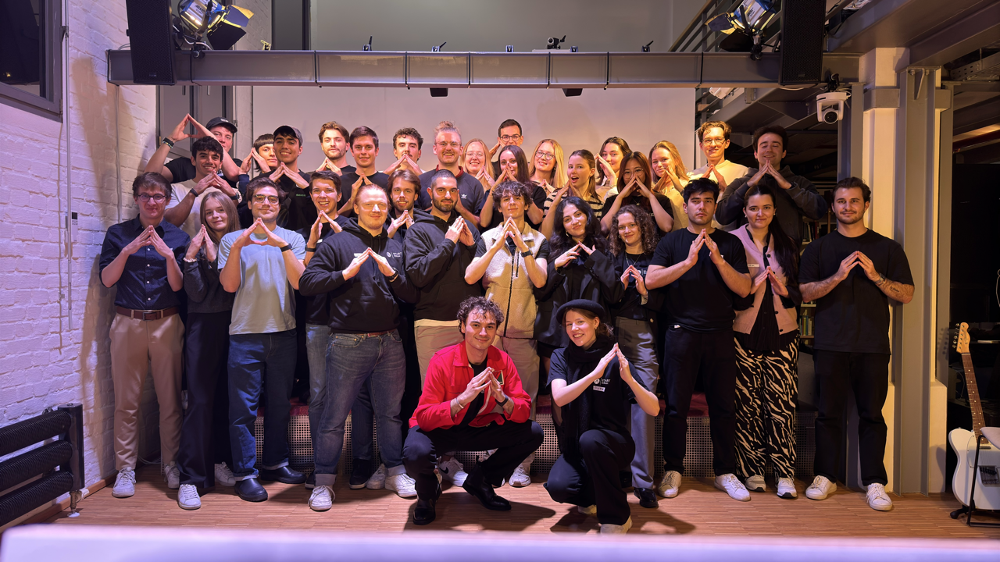
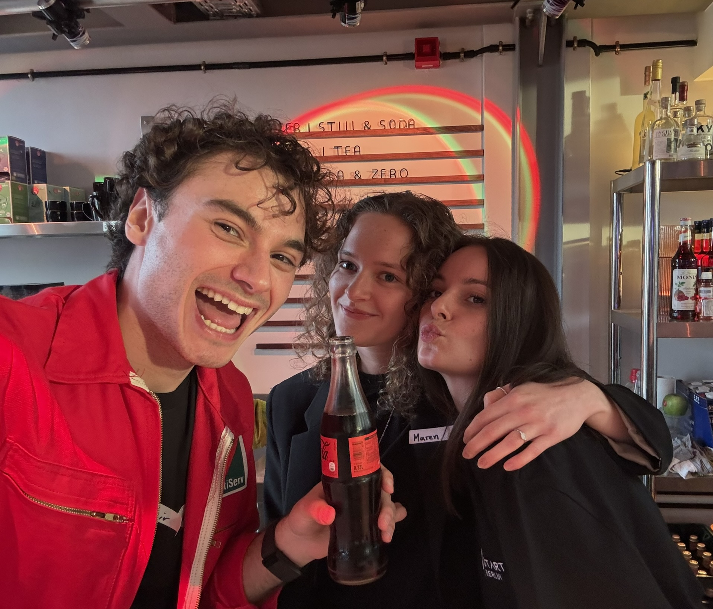
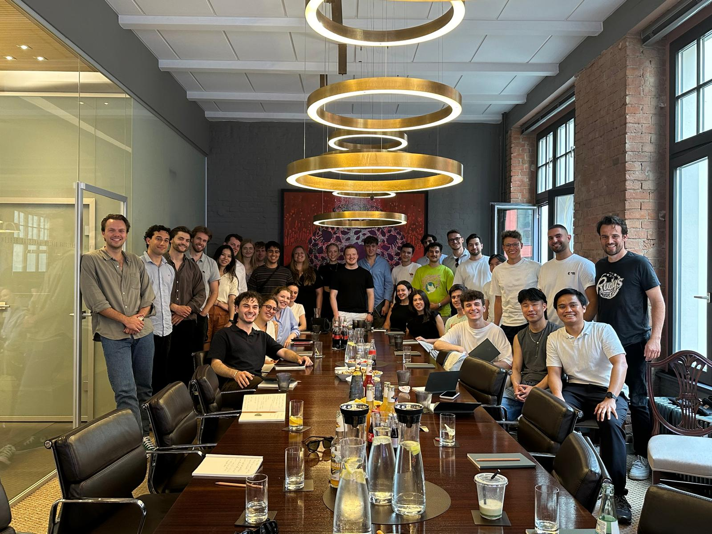
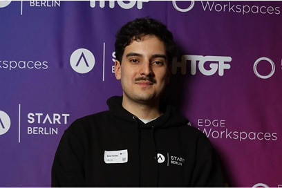

how to join start berlin
Become part of Berlin’s leading student entrepreneurship network and take your first step toward building the future.

Become part of Berlin’s leading student entrepreneurship network and take your first step toward building the future.


Whether you're just starting out or looking to take your venture to the next level: At START Berlin you'll dive deep into a vibrant ecosystem of innovation, collaboration and growth.
You’ll have the opportunity to explore our network, connect with industry experts, and learn from peers to sharpen your skills and bring your ideas to live. As you advance on your journey, our community guides and inspires you every step of the way.
Receive a reminder when applications open again, learn about our upcoming events and stay up to date with START Berlin.
sign up
As part of START Berlin, you will get:
A network of talented members and potential co-founders
Direct contact and insights into the most successful startups in Berlin
Contact to investors, mentors, startups and industry experts
Workshops with industry experts on topic such as legal, sales, and entrepreneurship
Access to our international START network with partners across Europe and Latin America
Extensive network of START Berlin partners and alumni
START Berlin offers tremendous value to its members, providing unique opportunities for personal and professional growth in the entrepreneurial ecosystem. In order to provide these extensive benefits and experiences, and to make our organisation financially sustainable, there is a membership fee. The membership fee for active members is €40 per semester.
Receive a reminder when applications open again, learn about our upcoming events and stay up to date with START Berlin.
SIGN UP
We are looking forward to your application if:
You are in university
You have a burning passion for entrepreneurship
You want to become a founder, get into venture capital, get in contact with prospective co-founders or learn more about the ecosystem
You commit to being an active member in our community for one entire year
You are based in Berlin for at least the next 6 months

Your path to START Berlin:
Complete a short application questionnare and upload your CV. You will receive an email confirming that we have received your application.
After initial screening of written applications, the selected candidates move on for a short interview with START members
Onboarding Trip: Your first event as an official STARTie on June 5-7th! You will meet the whole team and have the chance to get to know each other.
Apply now until 26th of April. After screening, we will hold interviews until May 12th and will notify you of our decision soon after. Selected candidates will then be invited to our Onboarding Day on May 23rd.

Please already mark the Onboarding Day in your calendar as this is a mandatory event for our new members. We strongly encourage you to join us for the Network Trip as well and will share more details together with our application decisions.
Receive a reminder when applications open again, learn about our upcoming events and stay up to date with START Berlin.
SIGN UP"START was the best learning environment I’ve ever been in. At 23, I led a team, made mistakes, and actually learned how to get things done—not just alone, but with others."

"START Berlin changed everything. I found a community of driven, like-minded people who inspired me to grow both personally and professionally. START opened doors I didn't know existed."
"START Berlin gave me so much value—not just during my time as a member, but long after. Through the community, I landed my first job and built lasting friendships here in Berlin."
We’re here to help! If you’re unsure about the application process, your eligibility, or what START Berlin is all about — just reach out.